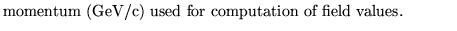

Next: Interactive control of lattice
Up: Use and description of
Previous: Geometric aberrations in multiturn
Computes the geometry of the lattice and parameters
related to the strengths and fields of the magnetic
elements.
NOTE: presently this operation works only with
Transport units. The run must have started with the
command UTRANSPORT.
Input format
HARDware layout and element parameters..(up to 80 char)
E
Parameter definition
E

Examples
The example is taken from demo1. It produces a listing of the hardware
information about the elements that are defined in the input section
of the data for the energy 1GeV.
hardware
1.0,
Dobrin Kaltchev
2004-10-20